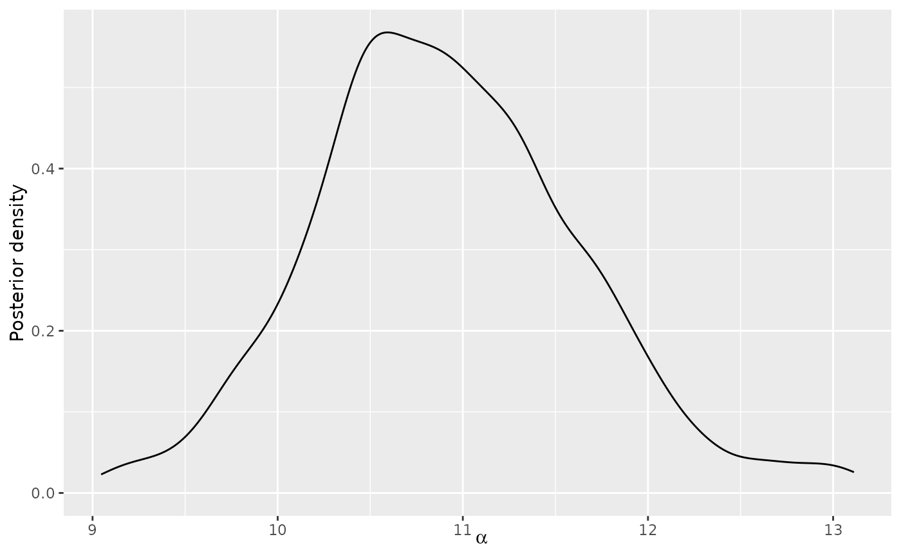

Plot posterior distributions of the parameters of the Mallows Rank model.
Usage
# S3 method for BayesMallows
plot(x, burnin = x$burnin, parameter = "alpha", items = NULL, ...)Arguments
- x
An object of type
BayesMallows, returned fromcompute_mallows.- burnin
A numeric value specifying the number of iterations to discard as burn-in. Defaults to
x$burnin, and must be provided ifx$burnindoes not exist. Seeassess_convergence.- parameter
Character string defining the parameter to plot. Available options are
"alpha","rho","cluster_probs","cluster_assignment", and"theta".- items
The items to study in the diagnostic plot for
rho. Either a vector of item names, corresponding tox$itemsor a vector of indices. If NULL, five items are selected randomly. Only used whenparameter = "rho".- ...
Other arguments passed to
plot(not used).
See also
Other posterior quantities:
assign_cluster(),
compute_consensus.BayesMallows(),
compute_consensus.SMCMallows(),
compute_consensus(),
compute_posterior_intervals.BayesMallows(),
compute_posterior_intervals.SMCMallows(),
compute_posterior_intervals(),
heat_plot(),
plot.SMCMallows(),
plot_elbow(),
plot_top_k(),
predict_top_k(),
print.BayesMallowsMixtures(),
print.BayesMallows()
Examples
# The example datasets potato_visual and potato_weighing contain complete
# rankings of 20 items, by 12 assessors. We first analyse these using the Mallows
# model:
model_fit <- compute_mallows(potato_visual)
# Se the documentation to compute_mallows for how to assess the convergence
# of the algorithm
# We set the burnin = 1000
model_fit$burnin <- 1000
# By default, the scale parameter "alpha" is plotted
plot(model_fit)

if (FALSE) {
# We can also plot the latent rankings "rho"
plot(model_fit, parameter = "rho")
# By default, a random subset of 5 items are plotted
# Specify which items to plot in the items argument.
plot(model_fit, parameter = "rho",
items = c(2, 4, 6, 9, 10, 20))
# When the ranking matrix has column names, we can also
# specify these in the items argument.
# In this case, we have the following names:
colnames(potato_visual)
# We can therefore get the same plot with the following call:
plot(model_fit, parameter = "rho",
items = c("P2", "P4", "P6", "P9", "P10", "P20"))
}
if (FALSE) {
# Plots of mixture parameters:
# We can run a mixture of Mallows models, using the n_clusters argument
# We use the sushi example data. See the documentation of compute_mallows for a more elaborate
# example
model_fit <- compute_mallows(sushi_rankings, n_clusters = 5, save_clus = TRUE)
model_fit$burnin <- 1000
# We can then plot the posterior distributions of the cluster probabilities
plot(model_fit, parameter = "cluster_probs")
# We can also get a cluster assignment plot, showing the assessors along the horizontal
# axis and the clusters along the vertical axis. The color show the probability
# of belonging to each clusters. The assessors are sorted along the horizontal
# axis according to their maximum a posterior cluster assignment. This plot
# illustrates the posterior uncertainty in cluster assignments.
plot(model_fit, parameter = "cluster_assignment")
# See also ?assign_cluster for a function which returns the cluster assignment
# back in a dataframe.
}